Generated from notebook. Paths are relative to repository.
| index | filename | source_relative_path | file_ext | mime_type | file_size_kb | status | warnings | quality_status | quality_score | quality_issues | ocr_success | ocr_confidence | ocr_text_length | ocr_text_quality_status | ocr_text_quality_score | ocr_source | best_ocr_variant | best_psm | medical_ok | relevance_score | document_type | document_type_confidence | common_field_count | lab_result_count | patient_name_found | date_found | age_found | sex_found | doctor_found | text_relative_path | json_relative_path | source_preview |
|---|---|---|---|---|---|---|---|---|---|---|---|---|---|---|---|---|---|---|---|---|---|---|---|---|---|---|---|---|---|---|---|---|
| 1 | -2147483648_-210193.jpg | samples/selected samples/-2147483648_-210193.jpg | .jpg | image/jpeg | 77.79 | needs_manual_review | missing_or_weak_common_fields | good_quality | 0.633 | too_bright;possible_rotation_or_sideways | True | 0.374 | 1475 | good_text | 0.639 | image_ocr_variants | light_sharpen | 11.0 | True | 1.00 | lab | 0.4 | 0 | 11 | False | False | False | False | False | notebook_outputs/selected_samples_v6/texts/0001_-2147483648_-210193.txt | notebook_outputs/selected_samples_v6/json/0001_-2147483648_-210193.json | notebook_outputs/selected_samples_v6/source_previews/0001_-2147483648_-210193.png |
| 2 | -2147483648_-210195.jpg | samples/selected samples/-2147483648_-210195.jpg | .jpg | image/jpeg | 42.00 | partial_extraction | no_lab_rows_extracted | good_quality | 0.612 | too_bright;possible_rotation_or_sideways | True | 0.628 | 424 | usable_noisy_text | 0.315 | image_ocr_variants | light_autocontrast | 11.0 | True | 1.00 | lab | 0.6 | 1 | 0 | False | False | False | False | False | notebook_outputs/selected_samples_v6/texts/0002_-2147483648_-210195.txt | notebook_outputs/selected_samples_v6/json/0002_-2147483648_-210195.json | notebook_outputs/selected_samples_v6/source_previews/0002_-2147483648_-210195.png |
| 3 | 0014161672_14041209_O_00404121721.pdf | samples/selected samples/0014161672_14041209_O_00404121721.pdf | application/pdf | 44.22 | extracted_good | pdf_quality_not_assessed_here | NaN | True | 0.950 | 960 | good_text | 0.819 | pdf_text_layer | pdf_text_layer | NaN | True | 1.00 | lab | 0.8 | 7 | 22 | True | True | True | True | False | notebook_outputs/selected_samples_v6/texts/0003_0014161672_14041209_O_00404121721.txt | notebook_outputs/selected_samples_v6/json/0003_0014161672_14041209_O_00404121721.json | notebook_outputs/selected_samples_v6/source_previews/0003_0014161672_14041209_O_00404121721.png | |||
| 4 | 0020139871_14041209_O_00404121714.pdf | samples/selected samples/0020139871_14041209_O_00404121714.pdf | application/pdf | 41.35 | extracted_good | pdf_quality_not_assessed_here | NaN | True | 0.950 | 492 | good_text | 0.573 | pdf_text_layer | pdf_text_layer | NaN | True | 1.00 | lab | 0.6 | 7 | 4 | True | True | True | True | False | notebook_outputs/selected_samples_v6/texts/0004_0020139871_14041209_O_00404121714.txt | notebook_outputs/selected_samples_v6/json/0004_0020139871_14041209_O_00404121714.json | notebook_outputs/selected_samples_v6/source_previews/0004_0020139871_14041209_O_00404121714.png | |||
| 5 | 0021858845_14041209_O_00404121731.pdf | samples/selected samples/0021858845_14041209_O_00404121731.pdf | application/pdf | 42.88 | extracted_good | pdf_quality_not_assessed_here | NaN | True | 0.950 | 768 | good_text | 0.763 | pdf_text_layer | pdf_text_layer | NaN | True | 1.00 | lab | 0.6 | 7 | 17 | True | True | True | True | False | notebook_outputs/selected_samples_v6/texts/0005_0021858845_14041209_O_00404121731.txt | notebook_outputs/selected_samples_v6/json/0005_0021858845_14041209_O_00404121731.json | notebook_outputs/selected_samples_v6/source_previews/0005_0021858845_14041209_O_00404121731.png | |||
| 6 | 0023471026_14041209_O_00404121728.pdf | samples/selected samples/0023471026_14041209_O_00404121728.pdf | application/pdf | 40.79 | needs_manual_review | low_structured_data | pdf_quality_not_assessed_here | NaN | True | 0.950 | 406 | usable_noisy_text | 0.434 | pdf_text_layer | pdf_text_layer | NaN | True | 1.00 | lab | 0.6 | 7 | 2 | True | True | True | True | False | notebook_outputs/selected_samples_v6/texts/0006_0023471026_14041209_O_00404121728.txt | notebook_outputs/selected_samples_v6/json/0006_0023471026_14041209_O_00404121728.json | notebook_outputs/selected_samples_v6/source_previews/0006_0023471026_14041209_O_00404121728.png | ||
| 7 | 0024150010_14041209_O_00404121722.pdf | samples/selected samples/0024150010_14041209_O_00404121722.pdf | application/pdf | 44.13 | extracted_good | pdf_quality_not_assessed_here | NaN | True | 0.950 | 958 | good_text | 0.819 | pdf_text_layer | pdf_text_layer | NaN | True | 1.00 | lab | 0.8 | 7 | 22 | True | True | True | True | False | notebook_outputs/selected_samples_v6/texts/0007_0024150010_14041209_O_00404121722.txt | notebook_outputs/selected_samples_v6/json/0007_0024150010_14041209_O_00404121722.json | notebook_outputs/selected_samples_v6/source_previews/0007_0024150010_14041209_O_00404121722.png | |||
| 8 | 0025631314_14041209_O_00404121726.pdf | samples/selected samples/0025631314_14041209_O_00404121726.pdf | application/pdf | 41.18 | extracted_good | pdf_quality_not_assessed_here | NaN | True | 0.950 | 471 | usable_noisy_text | 0.547 | pdf_text_layer | pdf_text_layer | NaN | True | 1.00 | lab | 0.6 | 7 | 4 | True | True | True | True | False | notebook_outputs/selected_samples_v6/texts/0008_0025631314_14041209_O_00404121726.txt | notebook_outputs/selected_samples_v6/json/0008_0025631314_14041209_O_00404121726.json | notebook_outputs/selected_samples_v6/source_previews/0008_0025631314_14041209_O_00404121726.png | |||
| 9 | 0025692283_14041209_O_00404121730.pdf | samples/selected samples/0025692283_14041209_O_00404121730.pdf | application/pdf | 42.40 | extracted_good | pdf_quality_not_assessed_here | NaN | True | 0.950 | 468 | good_text | 0.559 | pdf_text_layer | pdf_text_layer | NaN | True | 1.00 | lab | 0.6 | 7 | 4 | True | True | True | True | False | notebook_outputs/selected_samples_v6/texts/0009_0025692283_14041209_O_00404121730.txt | notebook_outputs/selected_samples_v6/json/0009_0025692283_14041209_O_00404121730.json | notebook_outputs/selected_samples_v6/source_previews/0009_0025692283_14041209_O_00404121730.png | |||
| 10 | 20260427_181554.jpg | samples/selected samples/20260427_181554.jpg | .jpg | image/jpeg | 42.47 | needs_manual_review | missing_or_weak_common_fields | good_quality | 0.746 | True | 0.673 | 344 | usable_noisy_text | 0.435 | image_ocr_variants | light_autocontrast_rot90 | 6.0 | True | 1.00 | lab | 1.0 | 2 | 6 | False | False | False | False | True | notebook_outputs/selected_samples_v6/texts/0010_20260427_181554.txt | notebook_outputs/selected_samples_v6/json/0010_20260427_181554.json | notebook_outputs/selected_samples_v6/source_previews/0010_20260427_181554.png | |
| 11 | 20260427_181636.jpg | samples/selected samples/20260427_181636.jpg | .jpg | image/jpeg | 38.70 | needs_manual_review | missing_or_weak_common_fields | good_quality | 0.638 | True | 0.641 | 310 | usable_noisy_text | 0.327 | image_ocr_variants | mild_contrast_rot90 | 6.0 | True | 1.00 | lab | 0.6 | 2 | 4 | False | False | False | False | False | notebook_outputs/selected_samples_v6/texts/0011_20260427_181636.txt | notebook_outputs/selected_samples_v6/json/0011_20260427_181636.json | notebook_outputs/selected_samples_v6/source_previews/0011_20260427_181636.png | |
| 12 | 20260427_181654.jpg | samples/selected samples/20260427_181654.jpg | .jpg | image/jpeg | 36.80 | needs_manual_review | low_structured_data | needs_preprocessing | 0.490 | True | 0.634 | 296 | usable_noisy_text | 0.343 | image_ocr_variants | mild_contrast_rot90 | 6.0 | True | 1.00 | lab | 1.0 | 2 | 2 | False | False | False | False | True | notebook_outputs/selected_samples_v6/texts/0012_20260427_181654.txt | notebook_outputs/selected_samples_v6/json/0012_20260427_181654.json | notebook_outputs/selected_samples_v6/source_previews/0012_20260427_181654.png | |
| 13 | 20260427_181713.jpg | samples/selected samples/20260427_181713.jpg | .jpg | image/jpeg | 44.24 | ocr_unreliable_needs_reupload | ocr_text_quality=gibberish_text | good_quality | 0.771 | True | 0.710 | 199 | gibberish_text | 0.202 | image_ocr_variants | original_oriented_rot90 | 11.0 | True | 1.00 | lab | 0.4 | 2 | 2 | False | False | False | False | True | notebook_outputs/selected_samples_v6/texts/0013_20260427_181713.txt | notebook_outputs/selected_samples_v6/json/0013_20260427_181713.json | notebook_outputs/selected_samples_v6/source_previews/0013_20260427_181713.png | |
| 14 | 20260427_181919.jpg | samples/selected samples/20260427_181919.jpg | .jpg | image/jpeg | 58.18 | needs_manual_review | missing_or_weak_common_fields | good_quality | 0.765 | True | 0.740 | 437 | good_text | 0.598 | image_ocr_variants | original_oriented_rot90 | 11.0 | True | 1.00 | lab | 0.8 | 3 | 6 | False | False | False | False | True | notebook_outputs/selected_samples_v6/texts/0014_20260427_181919.txt | notebook_outputs/selected_samples_v6/json/0014_20260427_181919.json | notebook_outputs/selected_samples_v6/source_previews/0014_20260427_181919.png | |
| 15 | ۲۰۲۶۰۴۲۵_۲۲۰۷۰۰.jpg | samples/selected samples/۲۰۲۶۰۴۲۵_۲۲۰۷۰۰.jpg | .jpg | image/jpeg | 148.64 | extracted_good | good_quality | 0.786 | possible_rotation_or_sideways | True | 0.713 | 1586 | good_text | 0.877 | image_ocr_variants | light_sharpen | 11.0 | True | 1.00 | lab | 1.0 | 3 | 27 | False | False | False | False | False | notebook_outputs/selected_samples_v6/texts/0015_۲۰۲۶۰۴۲۵_۲۲۰۷۰۰.txt | notebook_outputs/selected_samples_v6/json/0015_۲۰۲۶۰۴۲۵_۲۲۰۷۰۰.json | notebook_outputs/selected_samples_v6/source_previews/0015_۲۰۲۶۰۴۲۵_۲۲۰۷۰۰.png | |
| 16 | ۲۰۲۶۰۴۲۸_۱۵۰۰۳۶.jpg | samples/selected samples/۲۰۲۶۰۴۲۸_۱۵۰۰۳۶.jpg | .jpg | image/jpeg | 67.78 | needs_manual_review | missing_or_weak_common_fields | good_quality | 0.840 | True | 0.562 | 1210 | good_text | 0.824 | image_ocr_variants | mild_contrast | 11.0 | True | 1.00 | lab | 1.0 | 2 | 15 | False | False | False | False | False | notebook_outputs/selected_samples_v6/texts/0016_۲۰۲۶۰۴۲۸_۱۵۰۰۳۶.txt | notebook_outputs/selected_samples_v6/json/0016_۲۰۲۶۰۴۲۸_۱۵۰۰۳۶.json | notebook_outputs/selected_samples_v6/source_previews/0016_۲۰۲۶۰۴۲۸_۱۵۰۰۳۶.png | |
| 17 | ۲۰۲۶۰۴۲۸_۱۵۰۰۵۱.jpg | samples/selected samples/۲۰۲۶۰۴۲۸_۱۵۰۰۵۱.jpg | .jpg | image/jpeg | 41.77 | needs_manual_review | unknown_document_type | needs_preprocessing | 0.523 | severe_blur | True | 0.261 | 1147 | usable_noisy_text | 0.345 | image_ocr_variants | threshold_fallback | 6.0 | True | 0.25 | unknown_medical | 0.0 | 0 | 1 | False | False | False | False | False | notebook_outputs/selected_samples_v6/texts/0017_۲۰۲۶۰۴۲۸_۱۵۰۰۵۱.txt | notebook_outputs/selected_samples_v6/json/0017_۲۰۲۶۰۴۲۸_۱۵۰۰۵۱.json | notebook_outputs/selected_samples_v6/source_previews/0017_۲۰۲۶۰۴۲۸_۱۵۰۰۵۱.png |
| 18 | ۲۰۲۶۰۴۲۸_۱۵۰۱۰۶.jpg | samples/selected samples/۲۰۲۶۰۴۲۸_۱۵۰۱۰۶.jpg | .jpg | image/jpeg | 56.83 | needs_manual_review | missing_or_weak_common_fields | good_quality | 0.770 | True | 0.445 | 1015 | good_text | 0.624 | image_ocr_variants | light_sharpen | 11.0 | True | 1.00 | lab | 0.4 | 1 | 8 | False | False | False | False | False | notebook_outputs/selected_samples_v6/texts/0018_۲۰۲۶۰۴۲۸_۱۵۰۱۰۶.txt | notebook_outputs/selected_samples_v6/json/0018_۲۰۲۶۰۴۲۸_۱۵۰۱۰۶.json | notebook_outputs/selected_samples_v6/source_previews/0018_۲۰۲۶۰۴۲۸_۱۵۰۱۰۶.png | |
| 19 | ۲۰۲۶۰۴۲۸_۱۵۰۱۲۰.jpg | samples/selected samples/۲۰۲۶۰۴۲۸_۱۵۰۱۲۰.jpg | .jpg | image/jpeg | 53.32 | needs_manual_review | low_structured_data | good_quality | 0.849 | True | 0.481 | 536 | usable_noisy_text | 0.321 | image_ocr_variants | threshold_fallback | 11.0 | True | 0.75 | lab | 0.4 | 0 | 1 | False | False | False | False | False | notebook_outputs/selected_samples_v6/texts/0019_۲۰۲۶۰۴۲۸_۱۵۰۱۲۰.txt | notebook_outputs/selected_samples_v6/json/0019_۲۰۲۶۰۴۲۸_۱۵۰۱۲۰.json | notebook_outputs/selected_samples_v6/source_previews/0019_۲۰۲۶۰۴۲۸_۱۵۰۱۲۰.png | |
| 20 | ۲۰۲۶۰۴۲۸_۱۵۰۲۲۸.jpg | samples/selected samples/۲۰۲۶۰۴۲۸_۱۵۰۲۲۸.jpg | .jpg | image/jpeg | 123.56 | needs_manual_review | missing_or_weak_common_fields | good_quality | 0.849 | True | 0.480 | 587 | usable_noisy_text | 0.450 | image_ocr_variants | original_oriented_rot90 | 11.0 | True | 0.25 | lab | 0.2 | 0 | 4 | False | False | False | False | False | notebook_outputs/selected_samples_v6/texts/0020_۲۰۲۶۰۴۲۸_۱۵۰۲۲۸.txt | notebook_outputs/selected_samples_v6/json/0020_۲۰۲۶۰۴۲۸_۱۵۰۲۲۸.json | notebook_outputs/selected_samples_v6/source_previews/0020_۲۰۲۶۰۴۲۸_۱۵۰۲۲۸.png |
Status: needs_manual_review | Type: lab | OCR text quality: good_text | OCR len: 1475 | Lab rows: 11
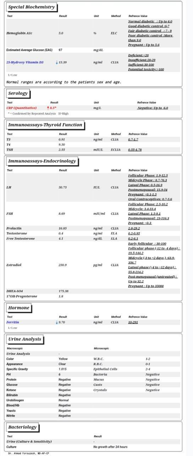
No rows.
| field_name | value | unit | reference_range | flag | confidence | source_text |
|---|---|---|---|---|---|---|
| AST | 9.0 | NaN | NaN | NaN | 0.82 | ast\ngit\ncua\nzz\nnH\n9.0\n1s\n255 |
| Testosterone | 020.93 | NaN | NaN | NaN | 0.82 | Testosterone\nas\nHA\n020.93 |
| Free Testosterone | 30 | NaN | NaN | NaN | 0.82 | Free Testosterone\na\npa\nza.\narly fellctar 30-100\nFollicular phase (12 (o-t.days):\nphase (12 o-tdays):\nra |
| Estradiol | 209 | NaN | NaN | NaN | 0.82 | Estradiol\nppt\n209\naes:\nostmenoeasal untrente\npias\n‘Eceguant Upto s3000\nmeasos |
| Ferritin | 4970 | NaN | NaN | NaN | 0.82 | Ferritin\n4970\ngmt\ncua\ndoze\nbetow\nurine analysts |\nernie |
| pH | 6 | NaN | NaN | NaN | 0.82 | PH\nacter\n6\nNegative |
| EAG | 7 | fl | NaN | NaN | 0.58 | EAS) 7 mat flies Ansufcenti20.22 _2s:nyidrowy Vieamin D3, gmt 41339 aun ‘Sufi. ‘otential toxiieya00 eto Normal ranges are according to the patients sex and age. serotoay | esa ont ete Yao Test Avgatlve: opto 0 |
| Testosterone | 30 | NaN | 210-2 | NaN | 0.58 | Testosterone a pa za. arly fellctar 30-100 Follicular phase (12 (o-t.days): phase (12 o-tdays): ra re ‘ldeyete (210-2 dave 3.8. 3862 |
| Appearance | 1015 | NaN | NaN | NaN | 0.58 | Appearance lar hac on 1015 ‘Specie Gay plehelal celts 2 |
| Urine Culture | No growth after 24 hours | NaN | NaN | NaN | 0.88 | en Noma! loca Negative Yeast Negative rte Negi ont Urine (Cutture& Sensitivity) No growth after 24 hours Catre ee |
| Protein | Negative | NaN | NaN | NaN | 0.66 | 1 ‘Appearance lar hac on 1015 ‘Specie Gay plehelal celts 2 PH acter 6 Negative Protein Negative cs Negative heose Negative Negative casts Ketone esa coystats ‘Negative tin Neg |
Tet ost ot ees ance ve ‘Good. diabetic conceae Eniedlabeticcontral 27-9 enogtobin Ate ooridlabetic controler, 30 J me ane eegnant tera Estimated Average Glvcose (EAS) 7 mat flies Ansufcenti20.22 _2s:nyidrowy Vieamin D3, gmt 41339 aun ‘Sufi. ‘otential toxiieya00 eto Normal ranges are according to the patients sex and age. serotoay | esa ont ete Yao Test Avgatlve: opto 0 can (Quanttat ) tar mgt Carne by Hopeted anys ah re feat ot ete ance ve n ast git cua zz nH 9.0 1s 255 er reusa sss.28 Imnunoassays-Endoerinatogy | ees Te est on ance Ve Aollicular Phaser ‘Mldevele phases 87-70.3 Eostmenopausat- 15.08 E 78 mt aun 5 Ecemmants 01-15 ‘Oral conmmaceatves: 07.6 ollicular Phase: 2,510.2 Mide Luutead Phase: 13.21 oH miuimt cua 809 osimenonausal 21062 ecrpuantc 02. Protactin git sas a git Testosterone as HA 020.93 Free Testosterone a pa za. arly fellctar 30-100 Follicular phase (12 (o-t.days): phase (12 o-tdays): ra re ‘ldeyete (210-2 dave 3.8. 3862 Estradiol ppt 209 aes: ostmenoeasal untrente pias ‘Eceguant Upto s3000 measos wa. vow Progesterone 4s tea ecu it tied onc ae Ferritin 4970 gmt cua doze betow urine analysts | ernie roseope rine Anatyats Corr Yellow wane 1 ‘Appearance lar hac on 1015 ‘Specie Gay plehelal celts 2 PH acter 6 Negative Protein Negative cs Negative heose Negative Negative casts Ketone esa coystats ‘Negative tin Negative obitnogen Noma! loca Negative Yeast Negative rte Negi ont Urine (Cutture& Sensitivity) No growth after 24 hours Catre ee
Status: partial_extraction | Type: lab | OCR text quality: usable_noisy_text | OCR len: 424 | Lab rows: 0
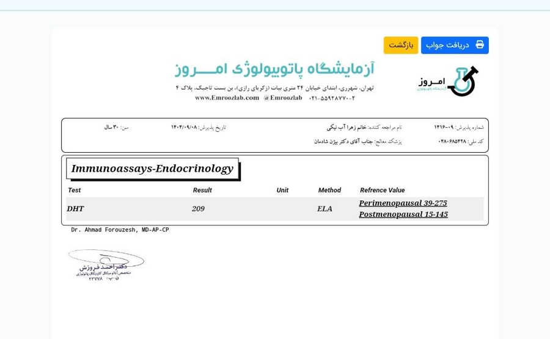
| field_name | value | confidence | source_text |
|---|---|---|---|
| center_name | امروز باتوبیولوژک آزمایشگاه | 0.7 | امروز باتوبیولوژک آزمایشگاه |
No rows.
بازگشت جواب دریا امروز باتوبیولوژک آزمایشگاه امروز را (زکریای بات متری 34 خیابان ابتدای شهرری, lat 4 پلاک تاجیک: بست بن زی): www.Emroozlab.com @Emrooslab 3 551287702 آبنیکی خامزهرا Jere از 13 زاجم 3 شادمان one دک آفای جخاب Ke: 38585328 eS Immunoassays-Endocrinology | Result Method Reference Value Test Unit Perimenopausal 39-275 DHT 209 ELA Postmenopausal 15-145 Dr. Ahmad Forouzesh, MD-AP-CP فروز aS بای aseptic ewe ed
Status: extracted_good | Type: lab | OCR text quality: good_text | OCR len: 960 | Lab rows: 22
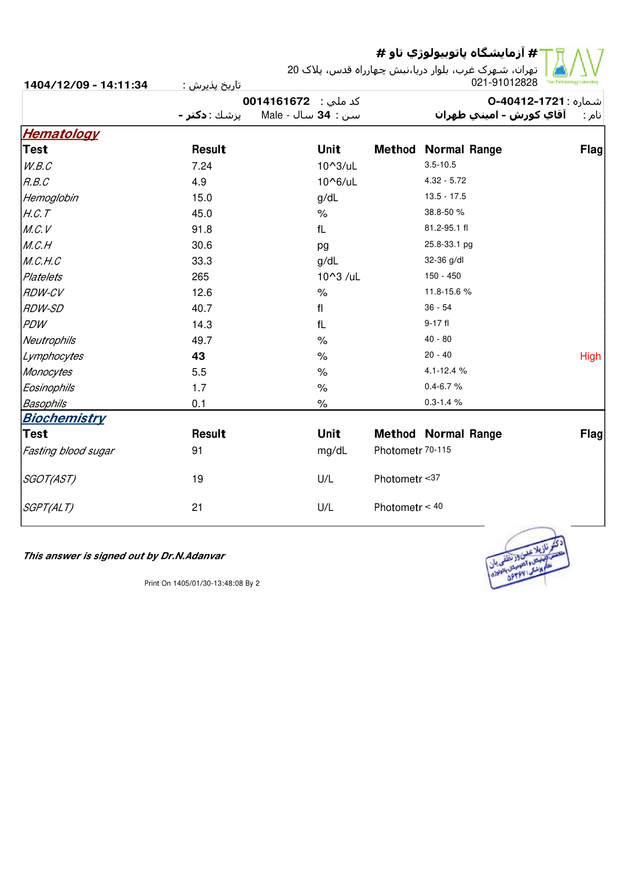
| field_name | value | confidence | source_text |
|---|---|---|---|
| center_name | آزمایشگاه پاتوبیولوژی تاو | 0.70 | # آزمایشگاه پاتوبیولوژی تاو# |
| national_id | 6f7b8e1c3f733b32eaf2a037ee257d451f9423ceb96b2e95426f83929403d282 | 0.90 | کد ملی :********** |
| tracking_number | O-40412-1721 | 0.85 | O-40412-1721 |
| date_of_test_or_report | 1404/12/09 | 0.90 | تاریخ پذیرش1404/12/09 |
| patient_name | کورش امینی طھران | 0.88 | امینی طھران- آقای کورش- دکتر34 : سن |
| sex | male | 0.85 | امینی طھران- آقای کورش- دکتر34 : سن |
| age | 34 | 0.85 | امینی طھران- آقای کورش- دکتر34 : سن |
| field_name | value | unit | reference_range | flag | confidence | source_text |
|---|---|---|---|---|---|---|
| WBC | 7.24 | 10^3/uL | 3.5-10.5 | NaN | 0.82 | W.B.C\n7.24\n10^3/uL\n3.5-10.5 |
| RBC | 4.9 | 10^6/uL | 4.32-5.72 | NaN | 0.82 | R.B.C\n4.9\n10^6/uL\n4.32 - 5.72 |
| HGB | 15.0 | g/dL | 13.5-17.5 | NaN | 0.82 | Hemoglobin\n15.0\ng/dL\n13.5 - 17.5 |
| HCT | 45.0 | % | 38.8-50 | NaN | 0.82 | H.C.T\n45.0\n%\n38.8-50 % |
| MCV | 91.8 | fL | 81.2-95.1 | NaN | 0.82 | M.C.V\n91.8\nfL\n81.2-95.1 fl |
| MCH | 30.6 | pg | 25.8-33.1 | NaN | 0.82 | M.C.H\n30.6\npg\n25.8-33.1 pg |
| MCHC | 33.3 | g/dL | 32-36 | NaN | 0.82 | M.C.H.C\n33.3\ng/dL\n32-36 g/dl |
| PLT | 265 | 10^3 /uL | 150-450 | NaN | 0.82 | Platelets\n265\n10^3 /uL\n150 - 450 |
| RDW-CV | 12.6 | % | 11.8-15.6 | NaN | 0.82 | RDW-CV\n12.6\n%\n11.8-15.6 % |
| RDW-SD | 40.7 | fl | 36-54 | NaN | 0.82 | RDW-SD\n40.7\nfl\n36 - 54 |
| PDW | 14.3 | fL | 9-17 | NaN | 0.82 | PDW\n14.3\nfL\n9-17 fl |
| NEUT% | 49.7 | % | 40-80 | NaN | 0.82 | Neutrophils\n49.7\n%\n40 - 80 |
| LYMPH% | 43 | % | 20-40 | High | 0.82 | Lymphocytes\n43\n%\n20 - 40\nHigh |
| MONO% | 5.5 | % | 4.1-12.4 | NaN | 0.82 | Monocytes\n5.5\n%\n4.1-12.4 % |
| EO% | 1.7 | % | 0.4-6.7 | NaN | 0.82 | Eosinophils\n1.7\n%\n0.4-6.7 % |
| BASO% | 0.1 | % | 0.3-1.4 | NaN | 0.82 | Basophils\n0.1\n%\n0.3-1.4 % |
| FBS | 91 | mg/dL | 70-115 | NaN | 0.82 | Fasting blood sugar\n91\nmg/dL\n70-115\nPhotometr |
| AST | 19 | U/L | <37 | Low | 0.82 | SGOT(AST)\n19\nU/L\n<37\nPhotometr |
| ALT | 21 | U/L | <40 | Low | 0.82 | SGPT(ALT)\n21\nU/L\n< 40\nPhotometr\nThis answer is signed out by Dr.N.Adanvar\nPrint On 1405/01/30-13:48:08 By 2 |
| Blood/Hb | 15.0 | g/dL | 13.5-17.5 | NaN | 0.58 | Hemoglobin 15.0 g/dL 13.5 - 17.5 |
| MCH | 33.3 | g/dL | 32-36 | NaN | 0.58 | M.C.H.C 33.3 g/dL 32-36 g/dl |
| Blood/Hb | 91 | mg/dL | 70-115 | NaN | 0.58 | blood sugar 91 mg/dL 70-115 Photometr |
# آزمایشگاه پاتوبیولوژی تاو# تھران، شھرک غرب، بلوار دریا،نبش چھارراه قدس، پلاک20 021-91012828 O-40412-1721 : پزشک امینی طھران- آقای کورش- دکتر34 : سن شماره : نام : کد ملی :0014161672 - سالMale : تاریخ پذیرش1404/12/09 - 14:11:34 Test Result Hematology Unit Normal Range Flag Method W.B.C 7.24 10^3/uL 3.5-10.5 R.B.C 4.9 10^6/uL 4.32 - 5.72 Hemoglobin 15.0 g/dL 13.5 - 17.5 H.C.T 45.0 % 38.8-50 % M.C.V 91.8 fL 81.2-95.1 fl M.C.H 30.6 pg 25.8-33.1 pg M.C.H.C 33.3 g/dL 32-36 g/dl Platelets 265 10^3 /uL 150 - 450 RDW-CV 12.6 % 11.8-15.6 % RDW-SD 40.7 fl 36 - 54 PDW 14.3 fL 9-17 fl Neutrophils 49.7 % 40 - 80 Lymphocytes 43 % 20 - 40 High Monocytes 5.5 % 4.1-12.4 % Eosinophils 1.7 % 0.4-6.7 % Basophils 0.1 % 0.3-1.4 % Test Result Biochemistry Unit Normal Range Flag Method Fasting blood sugar 91 mg/dL 70-115 Photometr SGOT(AST) 19 U/L <37 Photometr SGPT(ALT) 21 U/L < 40 Photometr This answer is signed out by Dr.N.Adanvar Print On 1405/01/30-13:48:08 By 2
Status: extracted_good | Type: lab | OCR text quality: good_text | OCR len: 492 | Lab rows: 4
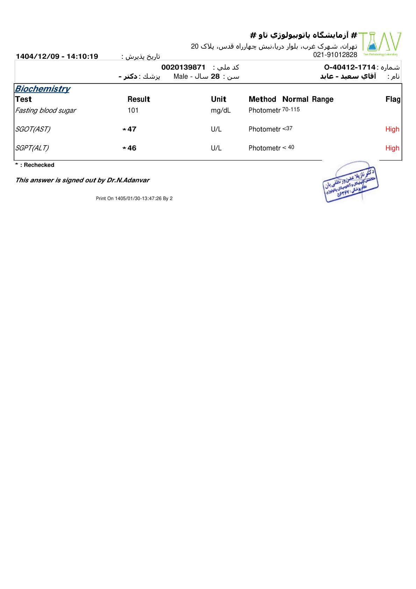
| field_name | value | confidence | source_text |
|---|---|---|---|
| center_name | آزمایشگاه پاتوبیولوژی تاو | 0.70 | # آزمایشگاه پاتوبیولوژی تاو# |
| national_id | fbc8e348901327c7b744fe7894f2a6cd85a9666dc57991b9cacb30997db46d2e | 0.90 | کد ملی :********** |
| tracking_number | O-40412-1714 | 0.85 | O-40412-1714 |
| date_of_test_or_report | 1404/12/09 | 0.90 | تاریخ پذیرش1404/12/09 |
| patient_name | سعید عابد | 0.88 | عابد- آقای سعید- دکتر28 : سن |
| sex | male | 0.85 | عابد- آقای سعید- دکتر28 : سن |
| age | 28 | 0.85 | عابد- آقای سعید- دکتر28 : سن |
| field_name | value | unit | reference_range | flag | confidence | source_text |
|---|---|---|---|---|---|---|
| FBS | 101 | mg/dL | 70-115 | NaN | 0.82 | Fasting blood sugar\n101\nmg/dL\n70-115\nPhotometr |
| AST | 47 | U/L | <37 | High | 0.82 | SGOT(AST)\n47\nU/L\n<37\nHigh\n*\nPhotometr |
| ALT | 46 | U/L | <40 | High | 0.82 | SGPT(ALT)\n46\nU/L\n< 40\nHigh\n*\nPhotometr\nThis answer is signed out by Dr.N.Adanvar |
| Blood/Hb | 101 | mg/dL | 70-115 | NaN | 0.58 | blood sugar 101 mg/dL 70-115 Photometr |
# آزمایشگاه پاتوبیولوژی تاو# تھران، شھرک غرب، بلوار دریا،نبش چھارراه قدس، پلاک20 021-91012828 O-40412-1714 : پزشک عابد- آقای سعید- دکتر28 : سن شماره : نام : کد ملی :0020139871 - سالMale : تاریخ پذیرش1404/12/09 - 14:10:19 Test Result Biochemistry Unit Normal Range Flag Method Fasting blood sugar 101 mg/dL 70-115 Photometr SGOT(AST) 47 U/L <37 High * Photometr SGPT(ALT) 46 U/L < 40 High * Photometr This answer is signed out by Dr.N.Adanvar * : Rechecked Print On 1405/01/30-13:47:26 By 2
Status: extracted_good | Type: lab | OCR text quality: good_text | OCR len: 768 | Lab rows: 17
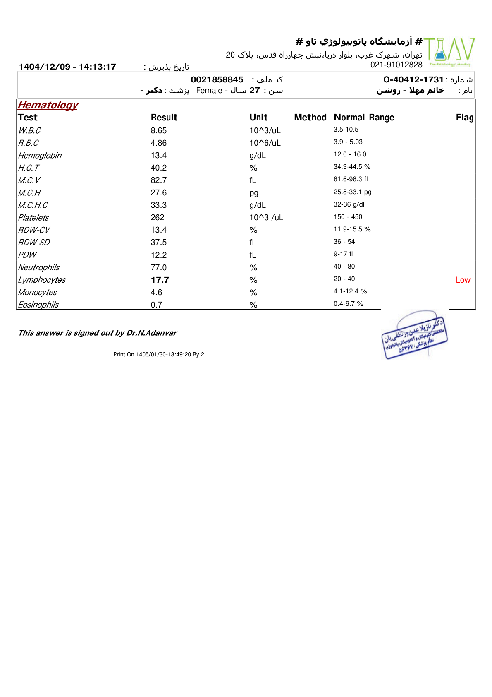
| field_name | value | confidence | source_text |
|---|---|---|---|
| center_name | آزمایشگاه پاتوبیولوژی تاو | 0.70 | # آزمایشگاه پاتوبیولوژی تاو# |
| national_id | 993bd7f6f5888804e4bef523c060a0159f93915ad216bfd00ee1ff0808e8fe97 | 0.90 | کد ملی :********** |
| tracking_number | O-40412-1731 | 0.85 | O-40412-1731 |
| date_of_test_or_report | 1404/12/09 | 0.90 | تاریخ پذیرش1404/12/09 |
| patient_name | مھلا روشن | 0.88 | روشن- خانم مھلا- دکتر27 : سن |
| sex | female | 0.85 | روشن- خانم مھلا- دکتر27 : سن |
| age | 27 | 0.85 | روشن- خانم مھلا- دکتر27 : سن |
| field_name | value | unit | reference_range | flag | confidence | source_text |
|---|---|---|---|---|---|---|
| WBC | 8.65 | 10^3/uL | 3.5-10.5 | NaN | 0.82 | W.B.C\n8.65\n10^3/uL\n3.5-10.5 |
| RBC | 4.86 | 10^6/uL | 3.9-5.03 | NaN | 0.82 | R.B.C\n4.86\n10^6/uL\n3.9 - 5.03 |
| HGB | 13.4 | g/dL | 12.0-16.0 | NaN | 0.82 | Hemoglobin\n13.4\ng/dL\n12.0 - 16.0 |
| HCT | 40.2 | % | 34.9-44.5 | NaN | 0.82 | H.C.T\n40.2\n%\n34.9-44.5 % |
| MCV | 82.7 | fL | 81.6-98.3 | NaN | 0.82 | M.C.V\n82.7\nfL\n81.6-98.3 fl |
| MCH | 27.6 | pg | 25.8-33.1 | NaN | 0.82 | M.C.H\n27.6\npg\n25.8-33.1 pg |
| MCHC | 33.3 | g/dL | 32-36 | NaN | 0.82 | M.C.H.C\n33.3\ng/dL\n32-36 g/dl |
| PLT | 262 | 10^3 /uL | 150-450 | NaN | 0.82 | Platelets\n262\n10^3 /uL\n150 - 450 |
| RDW-CV | 13.4 | % | 11.9-15.5 | NaN | 0.82 | RDW-CV\n13.4\n%\n11.9-15.5 % |
| RDW-SD | 37.5 | fl | 36-54 | NaN | 0.82 | RDW-SD\n37.5\nfl\n36 - 54 |
| PDW | 12.2 | fL | 9-17 | NaN | 0.82 | PDW\n12.2\nfL\n9-17 fl |
| NEUT% | 77.0 | % | 40-80 | NaN | 0.82 | Neutrophils\n77.0\n%\n40 - 80 |
| LYMPH% | 17.7 | % | 20-40 | Low | 0.82 | Lymphocytes\n17.7\n%\n20 - 40\nLow |
| MONO% | 4.6 | % | 4.1-12.4 | NaN | 0.82 | Monocytes\n4.6\n%\n4.1-12.4 % |
| EO% | 0.7 | % | 0.4-6.7 | NaN | 0.82 | Eosinophils\n0.7\n%\n0.4-6.7 %\nThis answer is signed out by Dr.N.Adanvar\nPrint On 1405/01/30-13:49:20 By 2 |
| Blood/Hb | 13.4 | g/dL | 12.0-16.0 | NaN | 0.58 | Hemoglobin 13.4 g/dL 12.0 - 16.0 |
| MCH | 33.3 | g/dL | 32-36 | NaN | 0.58 | M.C.H.C 33.3 g/dL 32-36 g/dl |
# آزمایشگاه پاتوبیولوژی تاو# تھران، شھرک غرب، بلوار دریا،نبش چھارراه قدس، پلاک20 021-91012828 O-40412-1731 : پزشک روشن- خانم مھلا- دکتر27 : سن شماره : نام : کد ملی :0021858845 - سالFemale : تاریخ پذیرش1404/12/09 - 14:13:17 Test Result Hematology Unit Normal Range Flag Method W.B.C 8.65 10^3/uL 3.5-10.5 R.B.C 4.86 10^6/uL 3.9 - 5.03 Hemoglobin 13.4 g/dL 12.0 - 16.0 H.C.T 40.2 % 34.9-44.5 % M.C.V 82.7 fL 81.6-98.3 fl M.C.H 27.6 pg 25.8-33.1 pg M.C.H.C 33.3 g/dL 32-36 g/dl Platelets 262 10^3 /uL 150 - 450 RDW-CV 13.4 % 11.9-15.5 % RDW-SD 37.5 fl 36 - 54 PDW 12.2 fL 9-17 fl Neutrophils 77.0 % 40 - 80 Lymphocytes 17.7 % 20 - 40 Low Monocytes 4.6 % 4.1-12.4 % Eosinophils 0.7 % 0.4-6.7 % This answer is signed out by Dr.N.Adanvar Print On 1405/01/30-13:49:20 By 2
Status: needs_manual_review | Type: lab | OCR text quality: usable_noisy_text | OCR len: 406 | Lab rows: 2
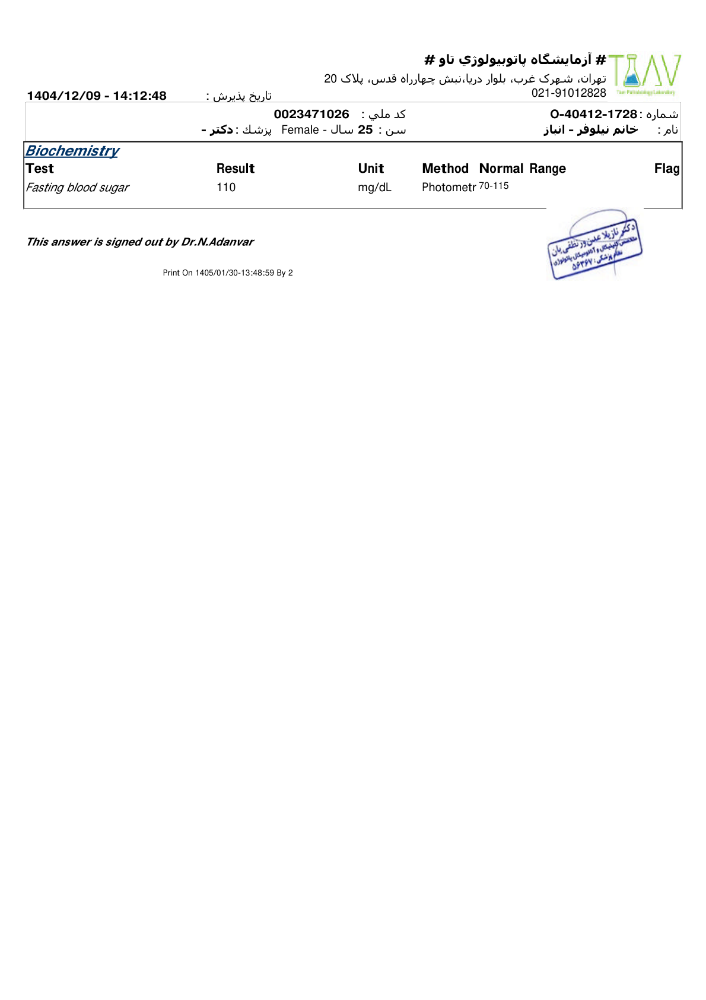
| field_name | value | confidence | source_text |
|---|---|---|---|
| center_name | آزمایشگاه پاتوبیولوژی تاو | 0.70 | # آزمایشگاه پاتوبیولوژی تاو# |
| national_id | 7b2b950d246b21b2c88874f16875bd7aef6c8c011d707f637db2f177b634e44e | 0.90 | کد ملی :********** |
| tracking_number | O-40412-1728 | 0.85 | O-40412-1728 |
| date_of_test_or_report | 1404/12/09 | 0.90 | تاریخ پذیرش1404/12/09 |
| patient_name | نیلوفر انباز | 0.88 | انباز- خانم نیلوفر- دکتر25 : سن |
| sex | female | 0.85 | انباز- خانم نیلوفر- دکتر25 : سن |
| age | 25 | 0.85 | انباز- خانم نیلوفر- دکتر25 : سن |
| field_name | value | unit | reference_range | flag | confidence | source_text |
|---|---|---|---|---|---|---|
| FBS | 110 | mg/dL | 70-115 | NaN | 0.82 | Fasting blood sugar\n110\nmg/dL\n70-115\nPhotometr\nThis answer is signed out by Dr.N.Adanvar\nPrint On 1405/01/30-13:48:59 By 2 |
| Blood/Hb | 110 | mg/dL | 70-115 | NaN | 0.58 | blood sugar 110 mg/dL 70-115 Photometr This answer is signed out by Dr.N.Adanvar Print On 1405/01/30-13:48:59 By 2 |
# آزمایشگاه پاتوبیولوژی تاو# تھران، شھرک غرب، بلوار دریا،نبش چھارراه قدس، پلاک20 021-91012828 O-40412-1728 : پزشک انباز- خانم نیلوفر- دکتر25 : سن شماره : نام : کد ملی :0023471026 - سالFemale : تاریخ پذیرش1404/12/09 - 14:12:48 Test Result Biochemistry Unit Normal Range Flag Method Fasting blood sugar 110 mg/dL 70-115 Photometr This answer is signed out by Dr.N.Adanvar Print On 1405/01/30-13:48:59 By 2
Status: extracted_good | Type: lab | OCR text quality: good_text | OCR len: 958 | Lab rows: 22
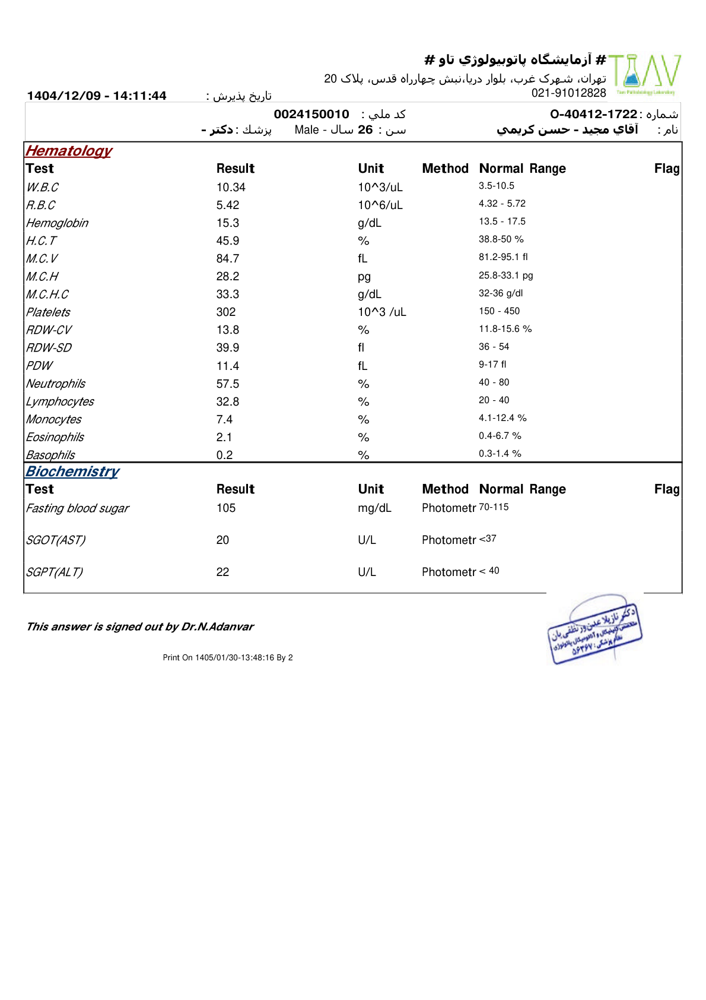
| field_name | value | confidence | source_text |
|---|---|---|---|
| center_name | آزمایشگاه پاتوبیولوژی تاو | 0.70 | # آزمایشگاه پاتوبیولوژی تاو# |
| national_id | 9fbdf80cbdfdd3843262589002d46203186a1c22c6e2db27107ba18e62b1f33f | 0.90 | کد ملی :********** |
| tracking_number | O-40412-1722 | 0.85 | O-40412-1722 |
| date_of_test_or_report | 1404/12/09 | 0.90 | تاریخ پذیرش1404/12/09 |
| patient_name | مجید حسن کریمی | 0.88 | حسن کریمی- آقای مجید- دکتر26 : سن |
| sex | male | 0.85 | حسن کریمی- آقای مجید- دکتر26 : سن |
| age | 26 | 0.85 | حسن کریمی- آقای مجید- دکتر26 : سن |
| field_name | value | unit | reference_range | flag | confidence | source_text |
|---|---|---|---|---|---|---|
| WBC | 10.34 | 10^3/uL | 3.5-10.5 | NaN | 0.82 | W.B.C\n10.34\n10^3/uL\n3.5-10.5 |
| RBC | 5.42 | 10^6/uL | 4.32-5.72 | NaN | 0.82 | R.B.C\n5.42\n10^6/uL\n4.32 - 5.72 |
| HGB | 15.3 | g/dL | 13.5-17.5 | NaN | 0.82 | Hemoglobin\n15.3\ng/dL\n13.5 - 17.5 |
| HCT | 45.9 | % | 38.8-50 | NaN | 0.82 | H.C.T\n45.9\n%\n38.8-50 % |
| MCV | 84.7 | fL | 81.2-95.1 | NaN | 0.82 | M.C.V\n84.7\nfL\n81.2-95.1 fl |
| MCH | 28.2 | pg | 25.8-33.1 | NaN | 0.82 | M.C.H\n28.2\npg\n25.8-33.1 pg |
| MCHC | 33.3 | g/dL | 32-36 | NaN | 0.82 | M.C.H.C\n33.3\ng/dL\n32-36 g/dl |
| PLT | 302 | 10^3 /uL | 150-450 | NaN | 0.82 | Platelets\n302\n10^3 /uL\n150 - 450 |
| RDW-CV | 13.8 | % | 11.8-15.6 | NaN | 0.82 | RDW-CV\n13.8\n%\n11.8-15.6 % |
| RDW-SD | 39.9 | fl | 36-54 | NaN | 0.82 | RDW-SD\n39.9\nfl\n36 - 54 |
| PDW | 11.4 | fL | 9-17 | NaN | 0.82 | PDW\n11.4\nfL\n9-17 fl |
| NEUT% | 57.5 | % | 40-80 | NaN | 0.82 | Neutrophils\n57.5\n%\n40 - 80 |
| LYMPH% | 32.8 | % | 20-40 | NaN | 0.82 | Lymphocytes\n32.8\n%\n20 - 40 |
| MONO% | 7.4 | % | 4.1-12.4 | NaN | 0.82 | Monocytes\n7.4\n%\n4.1-12.4 % |
| EO% | 2.1 | % | 0.4-6.7 | NaN | 0.82 | Eosinophils\n2.1\n%\n0.4-6.7 % |
| BASO% | 0.2 | % | 0.3-1.4 | NaN | 0.82 | Basophils\n0.2\n%\n0.3-1.4 % |
| FBS | 105 | mg/dL | 70-115 | NaN | 0.82 | Fasting blood sugar\n105\nmg/dL\n70-115\nPhotometr |
| AST | 20 | U/L | <37 | Low | 0.82 | SGOT(AST)\n20\nU/L\n<37\nPhotometr |
| ALT | 22 | U/L | <40 | Low | 0.82 | SGPT(ALT)\n22\nU/L\n< 40\nPhotometr\nThis answer is signed out by Dr.N.Adanvar\nPrint On 1405/01/30-13:48:16 By 2 |
| Blood/Hb | 15.3 | g/dL | 13.5-17.5 | NaN | 0.58 | Hemoglobin 15.3 g/dL 13.5 - 17.5 |
| MCH | 33.3 | g/dL | 32-36 | NaN | 0.58 | M.C.H.C 33.3 g/dL 32-36 g/dl |
| Blood/Hb | 105 | mg/dL | 70-115 | NaN | 0.58 | blood sugar 105 mg/dL 70-115 Photometr |
# آزمایشگاه پاتوبیولوژی تاو# تھران، شھرک غرب، بلوار دریا،نبش چھارراه قدس، پلاک20 021-91012828 O-40412-1722 : پزشک حسن کریمی- آقای مجید- دکتر26 : سن شماره : نام : کد ملی :0024150010 - سالMale : تاریخ پذیرش1404/12/09 - 14:11:44 Test Result Hematology Unit Normal Range Flag Method W.B.C 10.34 10^3/uL 3.5-10.5 R.B.C 5.42 10^6/uL 4.32 - 5.72 Hemoglobin 15.3 g/dL 13.5 - 17.5 H.C.T 45.9 % 38.8-50 % M.C.V 84.7 fL 81.2-95.1 fl M.C.H 28.2 pg 25.8-33.1 pg M.C.H.C 33.3 g/dL 32-36 g/dl Platelets 302 10^3 /uL 150 - 450 RDW-CV 13.8 % 11.8-15.6 % RDW-SD 39.9 fl 36 - 54 PDW 11.4 fL 9-17 fl Neutrophils 57.5 % 40 - 80 Lymphocytes 32.8 % 20 - 40 Monocytes 7.4 % 4.1-12.4 % Eosinophils 2.1 % 0.4-6.7 % Basophils 0.2 % 0.3-1.4 % Test Result Biochemistry Unit Normal Range Flag Method Fasting blood sugar 105 mg/dL 70-115 Photometr SGOT(AST) 20 U/L <37 Photometr SGPT(ALT) 22 U/L < 40 Photometr This answer is signed out by Dr.N.Adanvar Print On 1405/01/30-13:48:16 By 2
Status: extracted_good | Type: lab | OCR text quality: usable_noisy_text | OCR len: 471 | Lab rows: 4
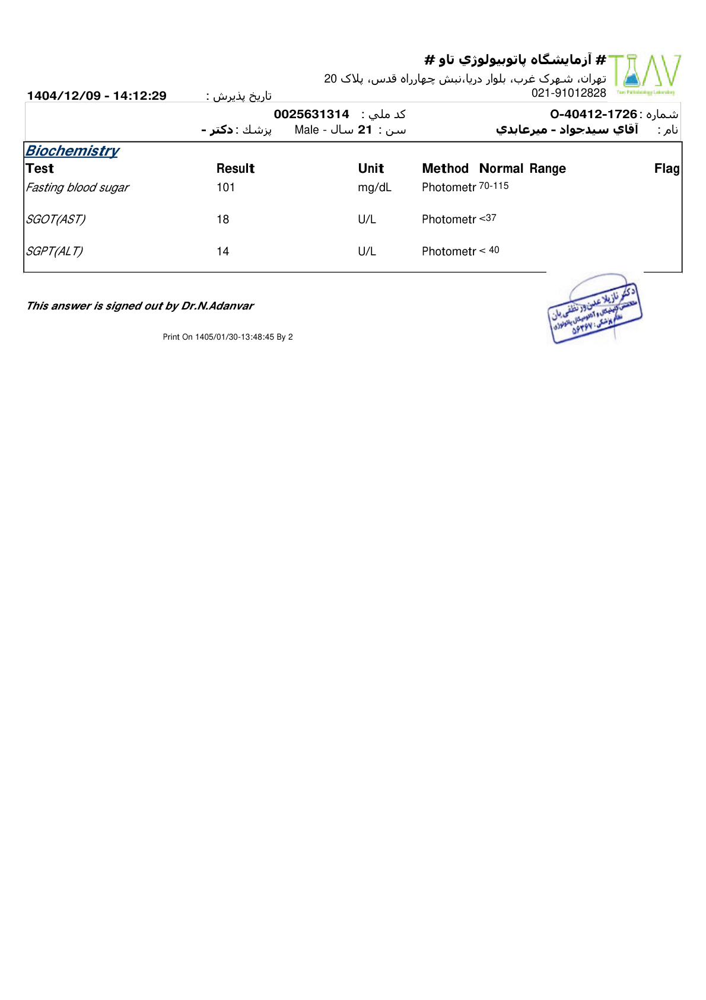
| field_name | value | confidence | source_text |
|---|---|---|---|
| center_name | آزمایشگاه پاتوبیولوژی تاو | 0.70 | # آزمایشگاه پاتوبیولوژی تاو# |
| national_id | e26aef3be603bdbe746d4b31dac73c903fa8a69e56620e440afaa6c36ca47332 | 0.90 | کد ملی :********** |
| tracking_number | O-40412-1726 | 0.85 | O-40412-1726 |
| date_of_test_or_report | 1404/12/09 | 0.90 | تاریخ پذیرش1404/12/09 |
| patient_name | سیدجواد میرعابدی | 0.88 | میرعابدی- آقای سیدجواد- دکتر21 : سن |
| sex | male | 0.85 | میرعابدی- آقای سیدجواد- دکتر21 : سن |
| age | 21 | 0.85 | میرعابدی- آقای سیدجواد- دکتر21 : سن |
| field_name | value | unit | reference_range | flag | confidence | source_text |
|---|---|---|---|---|---|---|
| FBS | 101 | mg/dL | 70-115 | NaN | 0.82 | Fasting blood sugar\n101\nmg/dL\n70-115\nPhotometr |
| AST | 18 | U/L | <37 | Low | 0.82 | SGOT(AST)\n18\nU/L\n<37\nPhotometr |
| ALT | 14 | U/L | <40 | Low | 0.82 | SGPT(ALT)\n14\nU/L\n< 40\nPhotometr\nThis answer is signed out by Dr.N.Adanvar\nPrint On 1405/01/30-13:48:45 By 2 |
| Blood/Hb | 101 | mg/dL | 70-115 | NaN | 0.58 | blood sugar 101 mg/dL 70-115 Photometr |
# آزمایشگاه پاتوبیولوژی تاو# تھران، شھرک غرب، بلوار دریا،نبش چھارراه قدس، پلاک20 021-91012828 O-40412-1726 : پزشک میرعابدی- آقای سیدجواد- دکتر21 : سن شماره : نام : کد ملی :0025631314 - سالMale : تاریخ پذیرش1404/12/09 - 14:12:29 Test Result Biochemistry Unit Normal Range Flag Method Fasting blood sugar 101 mg/dL 70-115 Photometr SGOT(AST) 18 U/L <37 Photometr SGPT(ALT) 14 U/L < 40 Photometr This answer is signed out by Dr.N.Adanvar Print On 1405/01/30-13:48:45 By 2
Status: extracted_good | Type: lab | OCR text quality: good_text | OCR len: 468 | Lab rows: 4
| field_name | value | confidence | source_text |
|---|---|---|---|
| center_name | آزمایشگاه پاتوبیولوژی تاو | 0.70 | # آزمایشگاه پاتوبیولوژی تاو# |
| national_id | 38299c368146feae42d0c657633d7906cc4ecfeda16d0b7f6cd31dea17ba87f6 | 0.90 | کد ملی :********** |
| tracking_number | O-40412-1730 | 0.85 | O-40412-1730 |
| date_of_test_or_report | 1404/12/09 | 0.90 | تاریخ پذیرش1404/12/09 |
| patient_name | حسنی شمس فلاح | 0.88 | شمس فلاح- خانم حسنی- دکتر21 : سن |
| sex | female | 0.85 | شمس فلاح- خانم حسنی- دکتر21 : سن |
| age | 21 | 0.85 | شمس فلاح- خانم حسنی- دکتر21 : سن |
| field_name | value | unit | reference_range | flag | confidence | source_text |
|---|---|---|---|---|---|---|
| FBS | 95 | mg/dL | 70-115 | NaN | 0.82 | Fasting blood sugar\n95\nmg/dL\n70-115\nPhotometr |
| AST | 14 | U/L | <31 | Low | 0.82 | SGOT(AST)\n14\nU/L\n<31\nPhotometr |
| ALT | 15 | U/L | <32 | Low | 0.82 | SGPT(ALT)\n15\nU/L\n<32\nPhotometr\nThis answer is signed out by Dr.N.Adanvar\nPrint On 1405/01/30-13:49:13 By 2 |
| Blood/Hb | 95 | mg/dL | 70-115 | NaN | 0.58 | blood sugar 95 mg/dL 70-115 Photometr |
# آزمایشگاه پاتوبیولوژی تاو# تھران، شھرک غرب، بلوار دریا،نبش چھارراه قدس، پلاک20 021-91012828 O-40412-1730 : پزشک شمس فلاح- خانم حسنی- دکتر21 : سن شماره : نام : کد ملی :0025692283 - سالFemale : تاریخ پذیرش1404/12/09 - 14:13:07 Test Result Biochemistry Unit Normal Range Flag Method Fasting blood sugar 95 mg/dL 70-115 Photometr SGOT(AST) 14 U/L <31 Photometr SGPT(ALT) 15 U/L <32 Photometr This answer is signed out by Dr.N.Adanvar Print On 1405/01/30-13:49:13 By 2
Status: needs_manual_review | Type: lab | OCR text quality: usable_noisy_text | OCR len: 344 | Lab rows: 6
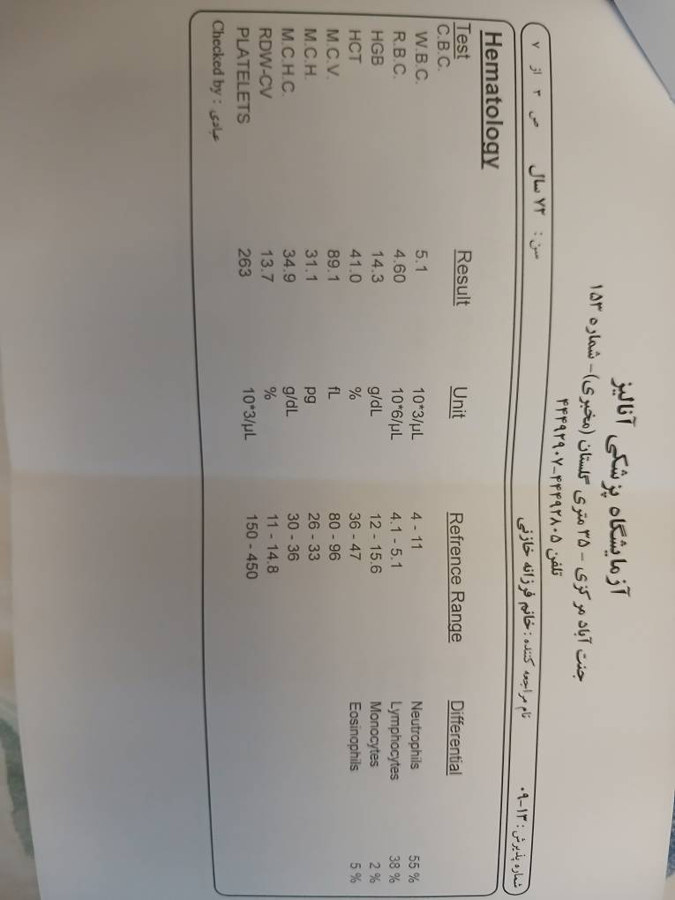
| field_name | value | confidence | source_text |
|---|---|---|---|
| center_name | 1 7 آنالیز پزشکی آزمایشگاه | 0.70 | 1 7 آنالیز پزشکی آزمایشگاه |
| doctor_name | ی آزمایشگاه | 0.75 | پزشکی آزمایشگاه |
| field_name | value | unit | reference_range | flag | confidence | source_text |
|---|---|---|---|---|---|---|
| WBC | 5.1 | NaN | 4-1 | NaN | 0.58 | WBC. 5.1 10°3/uL 4-1 |
| NEUT% | 55 | % | NaN | NaN | 0.58 | Neutrophils 55% | |
| RBC | 4.60 | NaN | 44-54 | rechecked | 0.58 | RBC. 4.60 40*6/uL 44-54 |
| LYMPH% | 38 | % | NaN | NaN | 0.58 | Lymphocytes 38% | |
| HGB | 5 | NaN | 12-6 | NaN | 0.58 | HB 5 148 5و 12-6 _ |
| MONO% | 1 | NaN | NaN | NaN | 0.58 | Monocytes: a pg — 1 |
1 7 آنالیز پزشکی آزمایشگاه 154 شماره - (مخبری) عستان متری 35 - کزی مر آباد جنت 34392907 4392805- تلفن 7 از 3 می Jet سن: خازنی فرزانه خافم : کننده مراجعه تام Ge Hematology [Test Result Unit Reference Range Differential ‘| WBC. 5.1 10°3/uL 4-1 Neutrophils 55% | RBC. 4.60 40*6/uL 44-54 Lymphocytes 38% | HB 5 148 5و 12-6 _ Monocytes: a pg — 1
Status: needs_manual_review | Type: lab | OCR text quality: usable_noisy_text | OCR len: 310 | Lab rows: 4
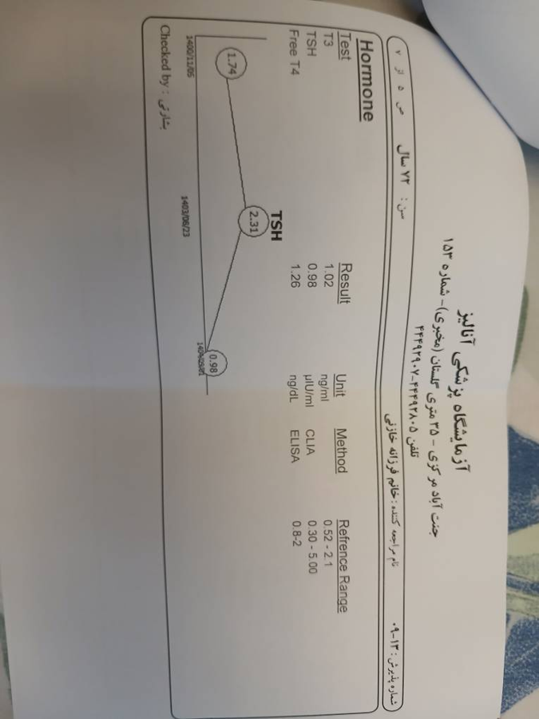
| field_name | value | confidence | source_text |
|---|---|---|---|
| center_name | 4 153 شماره HUT ی پزش آزمایشگاه | 0.70 | 4 153 شماره HUT ی پزش آزمایشگاه |
| tracking_number | Hormone | 0.85 | پذیرش\nHormone |
| field_name | value | unit | reference_range | flag | confidence | source_text |
|---|---|---|---|---|---|---|
| PT | 9 | NaN | 052-21 | NaN | 0.58 | pT مراجعه تم 9-13 : شارهپذیرش Hormone es! Result Unit 5 Reference Range 13 102 Gil 052-21 | |
| TSH | 0.98 | NaN | 0.30-0 | NaN | 0.58 | TSH 0.98 ...نان هه 0.30 -0 | |
| Free T4 | 082 | NaN | NaN | NaN | 0.58 | Free T4 weg ngidL ELISA 082 VES ’ __(231) | = |
| T4 | 082 | NaN | NaN | NaN | 0.58 | T4 weg ngidL ELISA 082 VES ’ __(231) | = |
4 153 شماره HUT ی پزش آزمایشگاه شهار (مخبری)- علستان متری 35 - GF yo UT جنت 2 شماره | 5 33392907-44492805 قلفن 22 ن: See خازنی فرژانه pT مراجعه تم 9-13 : شارهپذیرش Hormone es! Result Unit 5 Reference Range 13 102 Gil 052-21 | TSH 0.98 ...نان هه 0.30 -0 | Free T4 weg ngidL ELISA 082 VES ’ __(231) | =
Status: needs_manual_review | Type: lab | OCR text quality: usable_noisy_text | OCR len: 296 | Lab rows: 2
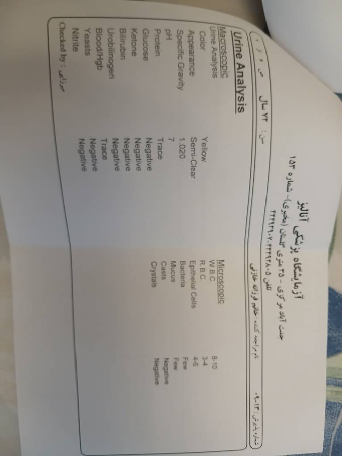
| field_name | value | confidence | source_text |
|---|---|---|---|
| center_name | 153 شماره HIT پزشکی آزمایشگاه | 0.70 | 153 شماره HIT پزشکی آزمایشگاه |
| doctor_name | ی آزمایشگاه | 0.75 | پزشکی آزمایشگاه |
| field_name | value | unit | reference_range | flag | confidence | source_text |
|---|---|---|---|---|---|---|
| WBC | 8 | NaN | NaN | NaN | 0.58 | WBC. 8-10 | |
| Color | Yellow | NaN | NaN | NaN | 0.66 | شماره ‘Urine Analysis Imacroscopic j 754 Microscopic |Unne Analysis WBC. 8-10 | Color Yellow RBC مو | Semi-Clear Epithelial Cells وه |
“ {
153 شماره HIT پزشکی آزمایشگاه
3 WS 8) okie متری 35 - مرکزی آباد جنت
32392907 -44492805 ن
73 05 تلفن
(gaz: Je o خازنی فرژانه اخانم کنده ol 29-13 پذیرش: شماره
‘Urine Analysis
Imacroscopic
j 754 Microscopic
|Unne Analysis WBC. 8-10
| Color Yellow RBC مو
| Semi-Clear Epithelial Cells وهStatus: ocr_unreliable_needs_reupload | Type: lab | OCR text quality: gibberish_text | OCR len: 199 | Lab rows: 2
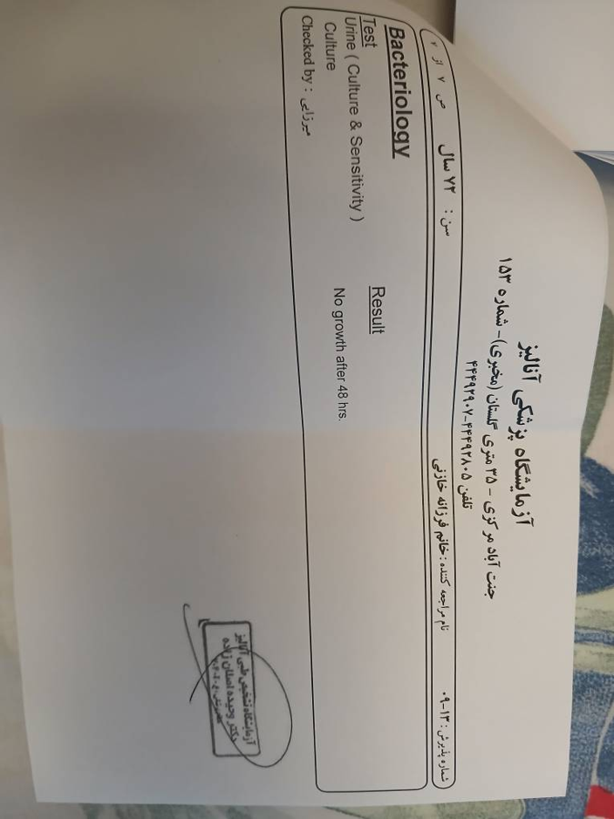
| field_name | value | confidence | source_text |
|---|---|---|---|
| center_name | HET پزشکی آزمایشگاه | 0.70 | HET پزشکی آزمایشگاه |
| doctor_name | ی آزمایشگاه | 0.75 | پزشکی آزمایشگاه |
| field_name | value | unit | reference_range | flag | confidence | source_text |
|---|---|---|---|---|---|---|
| HCT | 153 | NaN | 33392907-23492805 | NaN | 0.58 | HET پزشکی آزمایشگاه 153 شماره )- (مخبری گلستان متری 35 - رکزی م OUT جنت 33392907-23492805 تلفن AAT پذیرش (شماره خازنی فرزانه زخانم کننده eel نام 0 oe (5 Result No growth after 48 hrs. رس aa |
| Urine Culture | No growth after 48 hrs. | NaN | NaN | NaN | 0.88 | 3492805 تلفن AAT پذیرش (شماره خازنی فرزانه زخانم کننده eel نام 0 oe (5 Result No growth after 48 hrs. رس aa |
4 321 HET پزشکی آزمایشگاه 153 شماره )- (مخبری گلستان متری 35 - رکزی م OUT جنت 33392907-23492805 تلفن AAT پذیرش (شماره خازنی فرزانه زخانم کننده eel نام 0 oe (5 Result No growth after 48 hrs. رس aa
Status: needs_manual_review | Type: lab | OCR text quality: good_text | OCR len: 437 | Lab rows: 6
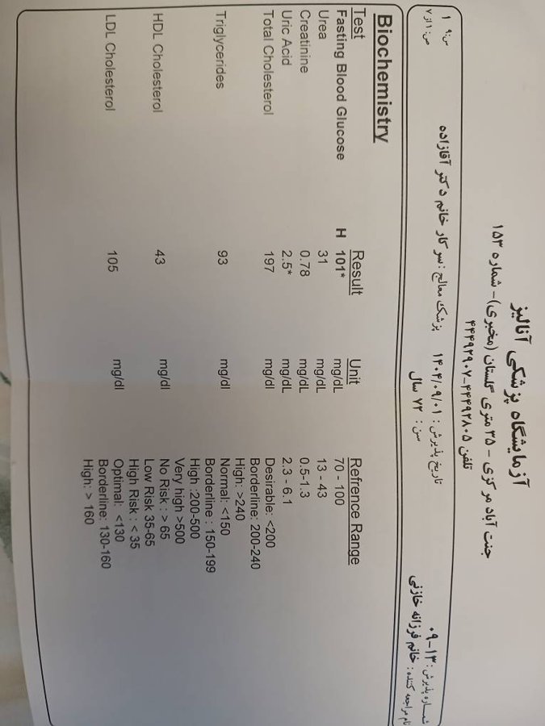
| field_name | value | confidence | source_text |
|---|---|---|---|
| center_name | آنالیز پزشکی آزمایشگاه | 0.70 | آنالیز پزشکی آزمایشگاه |
| tracking_number | 09-3 | 0.85 | پذیرش\n09-3 |
| doctor_name | ی آزمایشگاه | 0.75 | پزشکی آزمایشگاه |
| field_name | value | unit | reference_range | flag | confidence | source_text |
|---|---|---|---|---|---|---|
| Urea | 31 | mg/dL | NaN | NaN | 0.82 | Urea\n31\nmg/dL. |
| Creatinine | 0.78 | NaN | NaN | NaN | 0.82 | Creatininee\n0.78\nmg/d\n25 |
| Uric Acid | 197 | NaN | NaN | NaN | 0.82 | Uric Acid\nmala\nak\n197 |
| Total Cholesterol | 93 | NaN | NaN | NaN | 0.82 | Total Cholesterol\nrderli\n93 |
| FBS | 101 | NaN | 70-0 | rechecked | 0.58 | Glucose 101* 70-0 mg/d |
| Urine Glucose | 101 | NaN | 70-0 | rechecked | 0.58 | Glucose 101* 70-0 mg/d |
آنالیز پزشکی آزمایشگاه 153 شماره )- (مخبری کلستان متری 35 - کزی مر OUT جنت 33492 907-34492805 تلفن لا Ses آقازاده دکتر خانم کار :سر معالج پزشک 1304/09/01 : تاریخ پذیرش 09-3 ص17 مار فوانهخازنی خانم : ند برد سال 72 سن: Biochemistry Test Result Reference Range Unit Fa: و1 Blood Glucose 101* 70-0 mg/d Urea 31 mg/dL. Creatininee 0.78 mg/d 25 Uric Acid mala ak 197 Total Cholesterol rderli 93 Triglycerides HDL Cholesterol LDL Cholesterol
Status: extracted_good | Type: lab | OCR text quality: good_text | OCR len: 1586 | Lab rows: 27
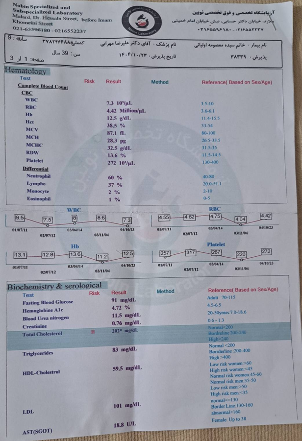
| field_name | value | confidence | source_text |
|---|---|---|---|
| center_name | Nobin Specialized and | 0.70 | Nobin Specialized and |
| national_id | bd6bf4f2aa616c5699a50393e5e1c568d191c74d3d524a12cb8aae0e66073aa8 | 0.90 | ********** |
| tracking_number | 138239 | 0.85 | پذیرش\n138239 |
| field_name | value | unit | reference_range | flag | confidence | source_text |
|---|---|---|---|---|---|---|
| HGB | 12.5 | g/dL | NaN | NaN | 0.82 | Hb\n12.5 g/dL.\n1 |
| HCT | 38.5 | % | 33-54 | NaN | 0.82 | Het\n38.5 %\n33-54 |
| MCV | 87.1 | fL | 80-100 | NaN | 0.82 | MCV\n87.1 fL\n80-100\ni |
| MCH | 283 | pg | 5-33.5 | NaN | 0.82 | MCH\n283 pg\n26,5-33.5 |
| MCHC | 31.535 | g/dL | NaN | NaN | 0.82 | MCHC\n31.535\ng/dL |
| RDW-CV | 13.6 | % | 115-145 | NaN | 0.82 | RDW.\n13.6 %\n115-145 |
| PLT | 130 | NaN | NaN | NaN | 0.82 | Platelet\n130-400,\n272 10°/pL\nDifferential |
| NEUT% | 40 | % | NaN | NaN | 0.82 | Neutrophil\n40-80\n%o |
| LYMPH% | 20 | % | 0-51.1 | NaN | 0.82 | Lympho\n20,0-51.1\n37 % |
| MONO% | 2 | % | 0-5 | NaN | 0.82 | Monocyte\n2-10\n2%\n0-5 |
| RBC | 2 | NaN | NaN | NaN | 0.82 | RBC\n2\n475\n1\n04\n01025\n034\nرن |
| HGB | 25 | NaN | 7-81 | NaN | 0.82 | Hb\n25-7-81 وم 3\n12.5\n136\n131\n128\n112\n01023 |
| FBS | 45 | % | NaN | NaN | 0.82 | Fasting Blood Glucose\n45-65\n472 % |
| HbA1c | 20 | mg/dL | 7.0-18.6 | NaN | 0.82 | Hemoglobin A1c\n20-SOyears:7.0-18.6\n11.5 mg/dL |
| BUN | 06 | mg/dL | <200 | NaN | 0.82 | Blood Urea nitrogen\n06-13\n0.76 mg/dL\nتحت\n—\n(Creatininee\n=\n‘Normal<200 |
| Total Cholesterol | 240 | NaN | <200 | NaN | 0.82 | Total Cholesterol\n“High?240.\nوی\nas\nri\npits\nhte\nNormal <200 |
| Triglycerides | >400 | mg/dL | >60 | NaN | 0.82 | Triglycerides\nHigh >400\nLow risk women>60\n59.5 mg/dL\nHigh risk women:<45 |
| HDL | 45 | NaN | 35-50 | NaN | 0.82 | HDL-Cholesterol\nNormal risk women:45-60\nNormal risk men:35-50\nLow risk men:>50\nHigh risk men-<3S\nnormal<=130\n101 mg/dL\nBorder Line;130-160 |
| LDL | >160 | U/L | NaN | Low | 0.82 | LDL\nabnormal>160\nFemale: Up to 38\n18.8 U/L\non\nان\nپا |
| AST | 5 | NaN | NaN | NaN | 0.82 | AST(SGOT)\nth\n5\n1\nI\nاز\ni\nPs |
| WBC | 73 | NaN | 35-0 | NaN | 0.58 | WBC 73 10/32 35-0 442 Million/pL 3.6461 |
| Urine Glucose | 45 | NaN | NaN | NaN | 0.66 | Based on Sex/Age) Method Result Risk Test Adult : 70-115 91 mg/dL Fasting Blood Glucose 45-65 472 % Hemoglobin A1c 20-SOyears:7.0-18.6 11.5 mg/dL Blood Urea nitrogen 06-1 |
| HGB | 1 | mg/dL | 7.0-18.6 | NaN | 0.58 | Hemoglobin A1c 20-SOyears:7.0-18.6 11.5 mg/dL |
| Blood/Hb | 1 | mg/dL | 7.0-18.6 | NaN | 0.58 | Hemoglobin A1c 20-SOyears:7.0-18.6 11.5 mg/dL |
| Urea | 06 | mg/dL | NaN | NaN | 0.58 | Urea nitrogen 06-13 0.76 mg/dL تحت — ( |
| Creatinine | <200 | NaN | 200-240 | rechecked | 0.58 | Creatininee = ‘Normal<200 0 a 202* Bordreline 200-240 |
| Total Cholesterol | 45 | NaN | 35-50 | NaN | 0.58 | Cholesterol Normal risk women:45-60 Normal risk men:35-50 Low risk men:>50 High risk men-<3S normal<=130 101 mg/dL Border Line;130-160 |
ee تس 1 [at — i! Nobin Specialized and Ubspecialized Laboratory نوبین تخصصی .5 فوز و تخصصی ایشکاه © 5 lard. Dr. Héssabi Street, before Imam امام خیایان نیش حسایی. دکتر خیایان ارد. jomemi Strect ©21-65596180 - 0216552237 - 2165596180 7 9 + a TVAYTFPAAA Loss مهرابی علیرضا دکتر آقای 0 نام پزشک اولیاتی معصومه سیده خانم + نام بیمار سال 9 1304/10/23 0 تاریخ پذیرش 138239 0 پذیرش از 1 صفحه: Test Risk Result Method Reference( Based on Sex/Age) ‘Complete Blood Count CBC ‘WBC 73 10/32 35-0 442 Million/pL 3.6461 Hb 12.5 g/dL. 1 Het 38.5 % 33-54 MCV 87.1 fL 80-100 i MCH 283 pg 26,5-33.5 MCHC 31.535 g/dL RDW. 13.6 % 115-145 Platelet 130-400, 272 10°/pL Differential Neutrophil 40-80 %o Lympho 20,0-51.1 37 % Monocyte 2-10 2% 0-5 Eosinophil % RBC 2 475 1 04 01025 034 رن 003 1 0314 03/11/04 102 03/11/04 02/07/12 Platelet Hb 25-7-81 وم 3 12.5 136 131 128 112 01023 04 01 011025 0014 "011 03/11/04 207/12 03/11/04 02/07/12 serological Biochemistry & Reference( Based on Sex/Age) Method Result Risk Test Adult : 70-115 91 mg/dL Fasting Blood Glucose 45-65 472 % Hemoglobin A1c 20-SOyears:7.0-18.6 11.5 mg/dL Blood Urea nitrogen 06-13 0.76 mg/dL تحت — (Creatininee = ‘Normal<200 0 a 202* Bordreline 200-240 Total Cholesterol “High?240. وی as ri pits hte Normal <200 83 7 Borrderline 200-400 Triglycerides High >400 Low risk women>60 59.5 mg/dL High risk women:<45 HDL-Cholesterol Normal risk women:45-60 Normal risk men:35-50 Low risk men:>50 High risk men-<3S normal<=130 101 mg/dL Border Line;130-160 LDL abnormal>160 Female: Up to 38 18.8 U/L on ان پا AST(SGOT) th 5 1 I از i Ps 1 mens g tant
Status: needs_manual_review | Type: lab | OCR text quality: good_text | OCR len: 1210 | Lab rows: 15
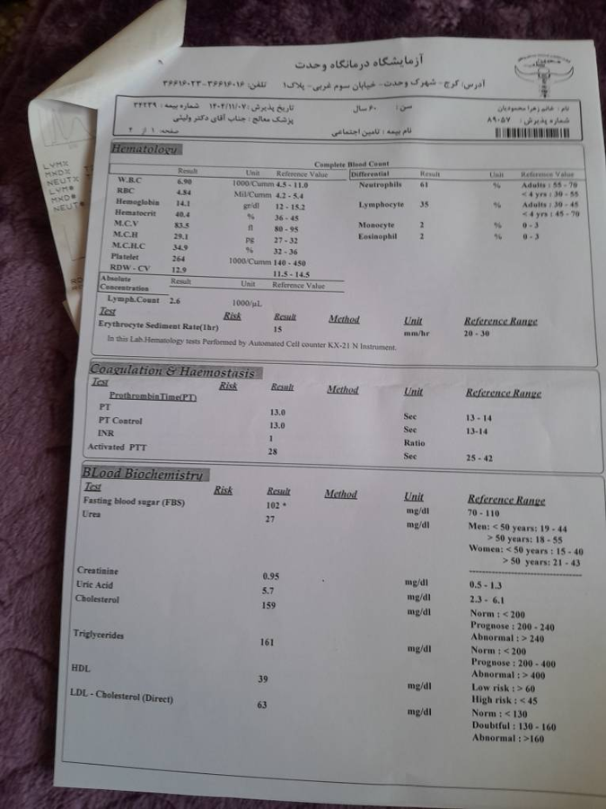
| field_name | value | confidence | source_text |
|---|---|---|---|
| center_name | وحدت درمانگاه آزمایشگاه | 0.70 | وحدت درمانگاه آزمایشگاه |
| tracking_number | 1302 | 0.85 | شماره\n1302 |
| field_name | value | unit | reference_range | flag | confidence | source_text |
|---|---|---|---|---|---|---|
| RBC | 42 | NaN | NaN | NaN | 0.82 | RBC\nau\nMIC.\nwoos\n42-4 |
| LYMPH% | 10 | NaN | NaN | NaN | 0.82 | Lymphocyte\nas\nAd\n10\n12 |
| HCT | 6 | NaN | NaN | NaN | 0.82 | Hematocrit\n“6\nane\n17\n6\nss\nMcy |
| MONO% | 9 | NaN | NaN | NaN | 0.82 | Monocyte\nکه\nF\n9\n2\nos\nMe\n2 |
| PLT | 26 | NaN | NaN | NaN | 0.82 | Platelet\n26\nRDN\nLs-145\nAbssiete\nRete\nConcentrates\nLymph. هی |
| PT Control | 10 | Ratio | NaN | NaN | 0.82 | PT Control\n10\nSee\n30\nDR\nRatio\nActivat\nPrr |
| Urea | 50 | NaN | 19-44 | NaN | 0.82 | Urea\na\nMen: > 50 years: 19-44\n< 50 years: 18-55\nWomen: > $0 years: 18-40.\n> 50 yenrs: 21\na |
| Creatinine | 095 | NaN | NaN | NaN | 0.82 | Creatininee\n095 |
| Uric Acid | 0 | NaN | NaN | NaN | 0.82 | Uric Acid\ngilt\n0\nmgiat |
| Total Cholesterol | 23 | mg/dl | 00-240 | NaN | 0.82 | Cholesterol\n23 61\n159\nmg/dl\nNort\n200\nPro\n00 - 240, |
| Triglycerides | 161 | NaN | <200 | NaN | 0.82 | Triglycerides\n161\nmg/d\nN\n$<200\nPrognose : 200. 400\nEDL\n‘Abnormal : > 400, |
| ESR | 20 | NaN | NaN | NaN | 0.58 | Erythrocyte Sediment Rate(thr) Methes Unit nave 20 0 ned by Automated C counter KX21 Nt 7 تا 007 هنم اه 1 ethos Unit Reference Range EnuthrembiaTimePD Pr 130 See 19 |
| PT | 10 | Ratio | 25-42 | NaN | 0.58 | PT Control 10 See 30 DR Ratio Activat Prr 28 See 25-42 = |: Biochemistry رس a iz Risk سس Method |
| FBS | 102 | NaN | 70-110 | rechecked | 0.58 | FBS) : ia 102* a 70-110 |
| Total Cholesterol | 45 | NaN | <130 | NaN | 0.58 | Cholesterol Direct) oo High risk : > 45 mpd Norm :< 130 30 - 160 Doubsful ‘Abnormal >160 —- |
وحدت درمانگاه آزمایشگاه 4 وحدت. شهرک - کرج 3 پلاک1 - فربی سوم خیابان 3 39616016 تلفی: 1 32239 1 یه شماره 1302/17072 برش پذ Ba #سال من Pb ATS آقای lie | معالج پزحک من nov اچشمامی تمین | یمه نام برش 131 عفد - at Complete = 3 Reh mee Val 0 2 i 7 2 wae rj 300 11.0 رس cm fd its io RBC au MIC. woos 42-4 Hemoglobin mat Lymphocyte as Ad 10 12 Hematocrit “6 ane 17 6 ss Mcy Monocyte که F 9 2 os Me 2 21 Eoslnophi oy 2 Pe 2 CHE Me 2 %6 000.Cumm 140 - 480 Platelet 26 RDN Ls-145 Abssiete Rete Concentrates Lymph. هی اما Risk Erythrocyte Sediment Rate(thr) Methes Unit nave 20 0 ned by Automated C counter KX21 Nt 7 تا 007 هنم اه 1 ethos Unit Reference Range EnuthrembiaTimePD Pr 130 See 19 PT Control 10 See 30 DR Ratio Activat Prr 28 See 25-42 = |: Biochemistry رس a iz Risk سس Method Fasting blood sugar (FBS) : ia 102* a 70-110 Urea a Men: > 50 years: 19-44 < 50 years: 18-55 Women: > $0 years: 18-40. > 50 yenrs: 21 a Creatininee 095 Uric Acid gilt 0 mgiat Cholesterol 23 61 159 mg/dl Nort 200 Pro 00 - 240, Abnormal :> 240 Triglycerides 161 mg/d N $<200 Prognose : 200. 400 EDL ‘Abnormal : > 400, 39 mg/d Low ris LDL - Cholesterol Direct) oo High risk : > 45 mpd Norm :< 130 30 - 160 Doubsful ‘Abnormal >160 —-
Status: needs_manual_review | Type: unknown_medical | OCR text quality: usable_noisy_text | OCR len: 1147 | Lab rows: 1
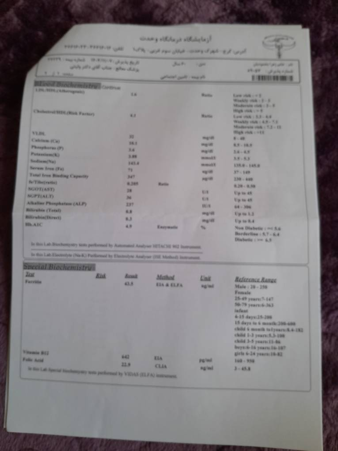
No rows.
| field_name | value | unit | reference_range | flag | confidence | source_text |
|---|---|---|---|---|---|---|
| Iron | 6 | NaN | NaN | NaN | 0.58 | fe Tet rasag moe reer | earn anty ” +A teem era » 6 vewe | Atatioe Phevponee (417) ws as 4 " arebie o ow ery smremattnret} “ one tpmes leat es . Sn tates ot ha Berdeeten 47 4a wey ae nL eerste peti Aud nan TAC |
* set Mr 7 a
c ay . so
ws oa,
‘ - wk enc :
Arne ght pp oihebele,t <_<"
- a6 .
See eh ot ree ed eee tak OF oat T .
a me 2 oe ye rece nee
ON Ae gn ade ear
beset oe ot me trirees
BIDS chemi ine \
rateable rf - dened :
: coment
i See oe
Recon heen “ rn foam 4h aa H
woot 1
: Sie et
i peutae are :
papers’
van ” ~~ on
(ee ory we some
everson “ we dean
[Peeters 1 —t as
eines ne west ete
ee Nowe ot ” ~~ rite
| Few tone eating perp wa ~ vee
fe Tet rasag moe reer
| earn anty ” +A teem
era » 6 vewe
| Atatioe Phevponee (417) ws as 4
" arebie o ow ery
smremattnret} “ one tpmes
leat es . Sn tates ot ha
Berdeeten 47 4a
wey ae
nL eerste peti Aud nan TAC Be tee
— ert ae Sree tne ree
Mou Lae tame (ae Pai Fouamaw Auras Re Nana tomo
i x, Lili Tyg i een
7” Sieh det ett fae Mederine Banas, :
_— ry Mean teat Mate 18 380
Famete. :
Ye 0e poset tes ’
sen arent ;
intone ar
O14 tore lt foe ‘
Wi apt et ene tate ”
. tebe A sath tree 8 8 8
chal FD pear iee, a
fill 64 ewan TF 4
} Dern tn pour te at
Semen 00d paced vranareees
Pate ond sal bal nw Leal
vee ue ches a ame
; | Ae ee hated eV EAL ALD: nance,
ana
v
|
a ’ Pe pene ee reer yeep rere i
boo eewy {on , fy * aStatus: needs_manual_review | Type: lab | OCR text quality: good_text | OCR len: 1015 | Lab rows: 8
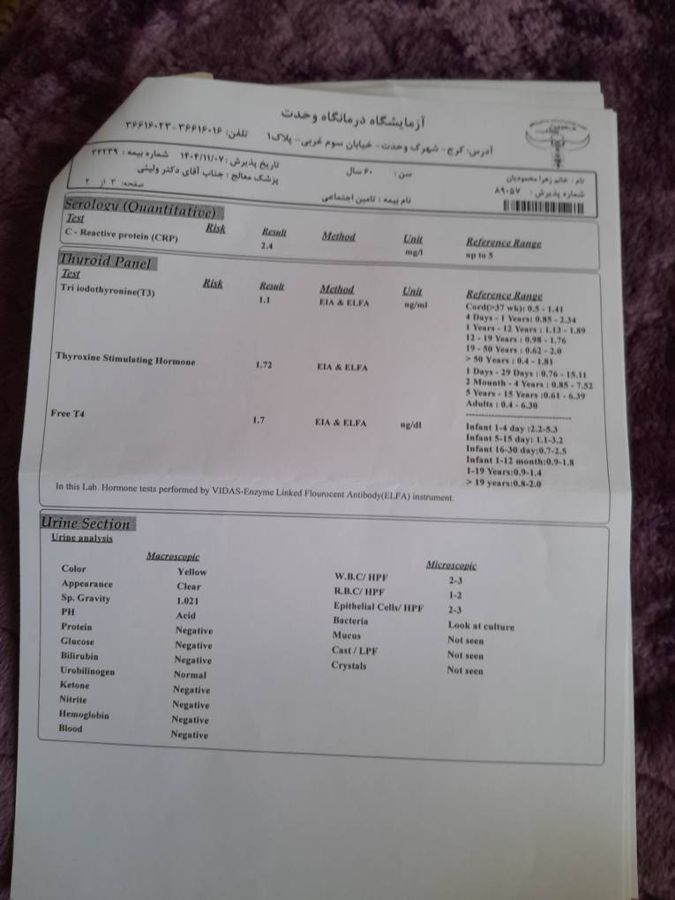
| field_name | value | confidence | source_text |
|---|---|---|---|
| tracking_number | igh | 0.85 | شماره\nigh |
| field_name | value | unit | reference_range | flag | confidence | source_text |
|---|---|---|---|---|---|---|
| Free T4 | 17 | NaN | 16-30 | NaN | 0.82 | Free T4\n17\nFIA مس\ngilt\nofnot tot dny yaad\nUnfnnt S08 days Wald\nait 16-30 day as\nUnfanc Iota |
| Color | 1 | NaN | NaN | NaN | 0.82 | Color\nYellow\nwane\nApp\nranee\nClear\nRue\n1 |
| Protein | 7 | NaN | NaN | NaN | 0.58 | protein (CR) ‘Method ale Reference Range seat 24 1 1 ws | dist | TH iodothyra ‘ewe فلا سا eT) اسر دای 7 WAI; HA 1 18 nwt Go Yours! 48194 iN avian 30 1" 19 Yours (08 11 | 80 Yours (6 ‘| ‘ |
| T4 | 80 | NaN | NaN | NaN | 0.58 | Thyroxine Stimulating 80 Yours 4 3 1 Day = 29 Daye 0:76 one un HHA HLA on Moun 1 Years ns 82 Senta 14 Vents 061 6.9 Mul 46.39 |
| T4 | 17 | NaN | 16-30 | NaN | 0.58 | T4 17 FIA مس gilt ofnot tot dny yaad Unfnnt S08 days Wald ait 16-30 day as Unfanc Iota wouthit 119 Ye 30 0 1 Foucen| AnibodyEL.PA) instument {i this Lab Hormone ess performed هار1 Links acrosconle Mlceasconic |
| Color | Yellow | NaN | NaN | NaN | 0.66 | instument {i this Lab Hormone ess performed هار1 Links acrosconle Mlceasconic Color Yellow wane App ranee Clear Rue 1 Sp, Gravity 1021 Epithe 7 24 PH Acid acterla Look at |
| Protein | Negative | NaN | NaN | NaN | 0.66 | ranee Clear Rue 1 Sp, Gravity 1021 Epithe 7 24 PH Acid acterla Look at eutturw Protein Negative Mucus Not seon Glucose Negative Cast Lh Not seen Bilirubin Ne ive Crystal Urobi |
| Urine Glucose | Negative | NaN | NaN | NaN | 0.66 | 021 Epithe 7 24 PH Acid acterla Look at eutturw Protein Negative Mucus Not seon Glucose Negative Cast Lh Not seen Bilirubin Ne ive Crystal Urobilinogen Not seen Normal Ketone N |
وحدت درمالگاه گام
زماپش
ree.
ITSP pap
تین
Cot myst
5 سوم خیاپان
ین شماره
igh
وخ yy
13
03137
:
"
دکذر آفای tse ماج
برش ی تار
=
wy
Ue
0
7
hoe
=i
سس
—
Alaa
om
Soil
0
00
jae
111/3
hh
esi
6
Reactive protein (CR)
‘Method
ale
Reference Range
seat
24
1
1
ws
| dist
| TH iodothyra
‘ewe
فلا
سا
eT)
اسر دای
7 WAI; HA
1
18
nwt
Go
Yours! 48194
iN
avian
30
1"
19 Yours (08
11
|
80 Yours (6
‘|
‘Thyroxine Stimulating
80 Yours 4
3
1 Day = 29 Daye 0:76
one
un
HHA HLA
on
Moun
1 Years ns
82
Senta 14 Vents 061
6.9
Mul 46.39
Free T4
17
FIA مس
gilt
ofnot tot dny yaad
Unfnnt S08 days Wald
ait 16-30 day as
Unfanc Iota
wouthit
119 Ye
30
0
1 Foucen| AnibodyEL.PA) instument
{i this Lab Hormone ess performed هار1 Links
acrosconle
Mlceasconic
Color
Yellow
wane
App
ranee
Clear
Rue
1
Sp, Gravity
1021
Epithe
7
24
PH
Acid
acterla
Look at eutturw
Protein
Negative
Mucus
Not seon
Glucose
Negative
Cast Lh
Not seen
Bilirubin
Ne
ive
Crystal
Urobilinogen
Not seen
Normal
Ketone
Neative
Nitrite
Newative
lemoglobin
Newutive
Blood
Negative
=
=Status: needs_manual_review | Type: lab | OCR text quality: usable_noisy_text | OCR len: 536 | Lab rows: 1
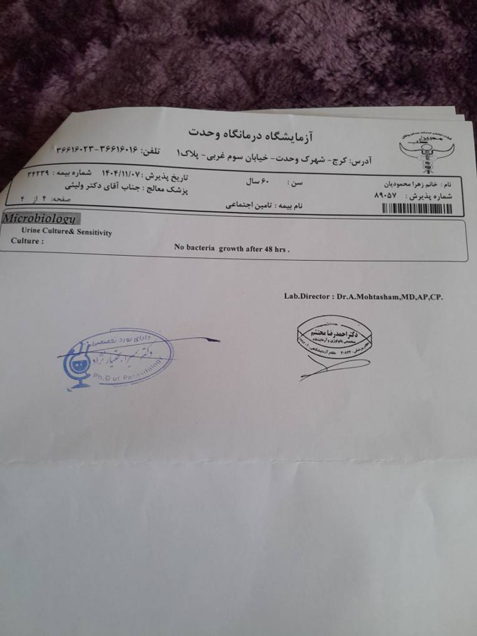
No rows.
| field_name | value | unit | reference_range | flag | confidence | source_text |
|---|---|---|---|---|---|---|
| ALT | 47 | NaN | NaN | NaN | 0.58 | alt al om Ac a f47. ONE eu Pans ete 3 vee ne 4 wey 32 on وه ره if oy ً و ی ی qe RAS s ety vee wa £4 x oa fee pe ی wk 11 Awa) 3S ae he ws ie PFN 1 ant arn مت کت ~ وحدت درمانگاه oft lesT rie, 1 ووم 13034 3661601 |
alt al om Ac a f47. ONE eu Pans ete 3 vee ne 4 wey 32 on وه ره if oy ً و ی ی qe RAS s ety vee wa £4 x oa fee pe ی wk 11 Awa) 3S ae he ws ie PFN 1 ant arn مت کت ~ وحدت درمانگاه oft lesT rie, 1 ووم 13034 36616016- تلفن: NK غربی- سوم غیابان وحدت- شهرگ کرج- آدرس: 22239 : پیمه شماره :17 پذدیرش تاریخ 93-0 3 معمودیان زهوا خانم : لام -6سال ولیئی دکتر آقای lise: alan پزشک on 89-57 :شریذپ شماره اجتماعی gall بیمه تام از 4 ante 9 1111/55 ‘Cutrore : No bacterin growth after 48 brs, LabDirector : Dr.A.Mohtashem,MD,AP,CP. = © زو ار = SS 55
Status: needs_manual_review | Type: lab | OCR text quality: usable_noisy_text | OCR len: 587 | Lab rows: 4
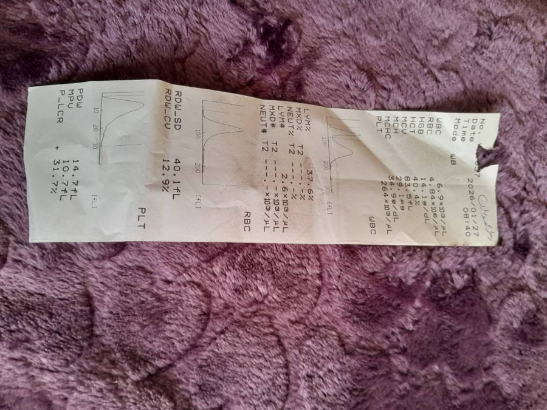
No rows.
| field_name | value | unit | reference_range | flag | confidence | source_text |
|---|---|---|---|---|---|---|
| PLT | 1 | NaN | NaN | NaN | 0.82 | PLT\nZe\nلا\n1\ntf\n2\nsel\nvi Za |
| RBC | 7 | NaN | NaN | NaN | 0.82 | RBC\nis\n7\n#4\n77\ncA)\nZa\n2 |
| NEUT% | 2 | NaN | NaN | NaN | 0.58 | NEUT% 2 gee 7 6x37 HL Lyne 7 bad wh A 109 اهر 12 MxD# iA te 4, of x07 HL |
| NEUT# | 2 | NaN | NaN | NaN | 0.58 | NEUT# 2 EY, 7 GA i |
Se * i A“? 1 a ee es a 3 7 7 9 7 oS 5 oe ید 7 = 7 Orly ارت At Ee. 3 we us ea oo. aL 9و erent e a 4.84% eee 7d 14 a) RE i 46 da. Ning Stl 83 7 3 cy 1 37 Poort 3964x0974 y PLT Ze لا 1 tf 2 sel vi Za 7 2 3 27 = ly 2 ae GA oe, TLE Led GE مت 34 37.67 79 12 3 4 71 fy NEUT% 2 gee 7 6x37 HL Lyne 7 bad wh A 109 اهر 12 MxD# iA te 4, of x07 HL NEUT# 2 EY, 7 GA i RBC is 7 #4 77 cA) Za 2 oe. غ rig 7 اب 7 2 ip 200 4 7 12 زر at 7 74 7 Ye Uy 444 RDW_SD 40.1fL RDW_CU 12.9% Zi i Levan 71 RET 4 2 46 $4 Rs Wes 7 15 7 4) زر 7 3 ue 17 1 Af Pow 190 tf Ay eet MPU 10.74L 0 1 4-18 a 7 + 0 9 پم 4 VE 2 / Fe